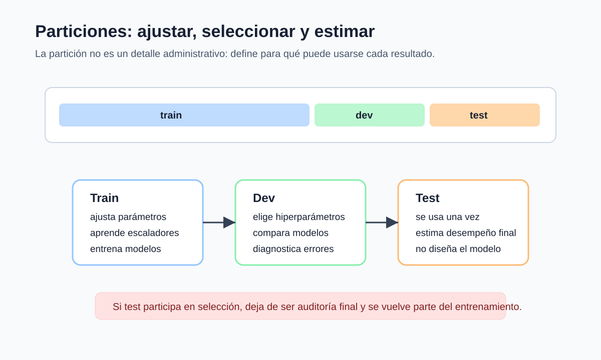

Métricas y particiones
Pregunta aplicada
Un modelo puede tener buena accuracy y aun así ser inaceptable si falla en los casos importantes. Antes de entrenar más modelos, debemos decidir:
¿qué error cuesta más y qué comparación será suficiente para elegir?
Objetivos del capítulo
Al terminar este capítulo deberías poder:
- elegir una métrica principal alineada con el costo de error;
- explicar por qué accuracy falla en clases desbalanceadas;
- construir un baseline útil;
- separar train, dev y test sin leakage;
- usar pipelines como defensa contra preprocesamiento incorrecto.
- interpretar métricas como estimadores de probabilidades poblacionales;
- deducir un umbral de decisión a partir de costos de error y reconocer cuándo esa deducción no basta;
- explicar mediante la fórmula de Bayes por qué la prevalencia modifica la precision de un clasificador.
Una métrica es un estadístico
Sea \(f\) un procedimiento ya fijado y \(L=\ell(f(X),Y)\). El riesgo de uso es
\[ R_{P_{\mathrm{uso}}}(f)=\mathbb E[L], \]
mientras que una evaluación de \(n\) casos produce
\[ \widehat R_n(f)=\frac1n\sum_{i=1}^n L_i. \]
El segundo objeto cambia si cambia la muestra. Bajo casos iid y varianza finita,
\[ \operatorname{se}(\widehat R_n) =\sqrt{\frac{\operatorname{Var}(L)}{n}}. \]
Para accuracy, \(L_i=\mathbf 1\{f(X_i)\neq Y_i\}\) es Bernoulli con probabilidad de error \(p_e\). Por tanto,
\[ \operatorname{Var}(\widehat{\mathrm{accuracy}}) =\frac{a(1-a)}{n}, \]
donde \(a=1-p_e\). En una muestra reemplazamos \(a\) por la accuracy observada para obtener un error estándar aproximado. Esta fórmula no corrige selección del modelo, dependencia ni cambio de población.
Matriz de confusión poblacional y empírica
Cada celda de la matriz de confusión estima una probabilidad conjunta, por ejemplo
\[ \mathbb P(\widehat Y=1,Y=0) \quad\text{mediante}\quad \frac{\#\{i:\widehat y_i=1,y_i=0\}}{n}. \]
Precision y recall son probabilidades condicionales estimadas:
\[ \operatorname{precision}=\mathbb P(Y=1\mid\widehat Y=1), \qquad \operatorname{recall}=\mathbb P(\widehat Y=1\mid Y=1). \]
El denominador efectivo de cada métrica puede ser mucho menor que \(n\), por lo que su incertidumbre puede ser grande incluso en un test aparentemente amplio.
Las definiciones poblacionales requieren denominadores positivos:
\[ \operatorname{precision} =\frac{\mathbb P(\widehat Y=1,Y=1)}{\mathbb P(\widehat Y=1)}, \qquad \operatorname{recall} =\frac{\mathbb P(\widehat Y=1,Y=1)}{\mathbb P(Y=1)}. \]
Si el clasificador no predice positivos, precision no está definida; asignarle cero es una convención de software, no una identidad matemática. Si el conjunto evaluado no contiene positivos, recall tampoco está definido para esa muestra. Un reporte debe mostrar conteos para que el lector pueda detectar estos casos.
Para recall, el tamaño efectivo es \(TP+FN\), es decir, el número de positivos observados. Bajo una aproximación binomial condicional, su error estándar es
\[ \widehat{\operatorname{se}}(\widehat{\operatorname{recall}}) \approx \sqrt{\frac{\widehat r(1-\widehat r)}{TP+FN}}. \]
La fórmula análoga para precision usa \(TP+FP\). Estas aproximaciones requieren casos independientes y un procedimiento fijado; no incluyen la incertidumbre por haber escogido modelo y umbral con los mismos datos.
El condicionamiento inverso y la prevalencia
Recall y precision condicionan en direcciones diferentes. Recall pregunta por la predicción entre los casos realmente positivos; precision pregunta por el estado real entre los casos que el modelo declaró positivos. La fórmula de Bayes conecta ambas direcciones:
\[ \mathbb P(Y=1\mid \widehat Y=1) =\frac{ \mathbb P(\widehat Y=1\mid Y=1)\mathbb P(Y=1) }{ \mathbb P(\widehat Y=1) }. \]
Si llamamos \(r\) al recall, \(s\) a la especificidad y \(\pi=\mathbb P(Y=1)\) a la prevalencia, entonces
\[ \mathbb P(\widehat Y=1) =r\pi+(1-s)(1-\pi), \]
y por tanto
\[ \operatorname{precision} =\frac{r\pi}{r\pi+(1-s)(1-\pi)}. \]
Esta identidad muestra por qué precision puede cambiar entre poblaciones aunque recall y especificidad permanezcan aproximadamente constantes: depende de la prevalencia. En aplicaciones diagnósticas o de detección, reportar solo una de estas cantidades oculta parte del problema.
Ejemplo: una clase poco frecuente. Supongamos \(r=0.90\), \(s=0.95\) y una prevalencia \(\pi=0.01\). Entonces
\[ \operatorname{precision} =\frac{0.90(0.01)}{0.90(0.01)+0.05(0.99)} \approx 0.154. \]
Aunque el clasificador detecta el 90% de los positivos y descarta correctamente el 95% de los negativos, menos de una de cada seis alertas corresponde a un caso positivo. La baja prevalencia no invalida el modelo, pero cambia el uso que puede darse a sus alertas.

Lectura de la figura. Cada partición tiene un uso. Train puede aprender parámetros y transformaciones; dev puede guiar elecciones de modelo; test se reserva para estimar el desempeño final. Si test participa en selección, la comparación queda contaminada.
Métrica principal
La métrica principal es la regla cuantitativa que se usará para seleccionar modelos durante el desarrollo.
Ejemplos:
| Problema | Métrica razonable | Motivo |
|---|---|---|
| Diagnóstico médico | recall o F1 | falsos negativos costosos |
| Filtro de alertas | precision | falsos positivos saturan al usuario |
| Ranking general | ROC-AUC o PR-AUC | importa ordenar riesgos |
| Regresión de demanda | MAE o RMSE | depende del costo de error |
Accuracy no siempre basta
En clases desbalanceadas, un modelo que predice siempre la clase mayoritaria puede tener alta accuracy.
Por eso, en clasificación binaria se debe revisar:
- matriz de confusión;
- precision;
- recall;
- F1;
- ROC-AUC o PR-AUC;
- costo de falsos positivos y falsos negativos.
Ejemplo resuelto: accuracy engañosa
Supón un problema con 1000 observaciones:
- 950 son negativas;
- 50 son positivas;
- un modelo predice todo como negativo.
La accuracy es:
\[ \frac{950}{1000}=0.95. \]
Pero el recall de la clase positiva es:
\[ \frac{TP}{TP+FN}=\frac{0}{0+50}=0. \]
Si detectar positivos era el objetivo, este modelo no sirve aunque su accuracy parezca alta.
Ejemplo resuelto: costo de falsos negativos
Supón un problema con 50 positivos y 950 negativos. Comparamos dos umbrales:
| Umbral | TP | FP | FN | TN |
|---|---|---|---|---|
| A | 35 | 40 | 15 | 910 |
| B | 25 | 10 | 25 | 940 |
El umbral A tiene:
\[ \text{precision}_A=\frac{35}{35+40}\approx0.467, \qquad \text{recall}_A=\frac{35}{35+15}=0.70. \]
El umbral B tiene:
\[ \text{precision}_B=\frac{25}{25+10}\approx0.714, \qquad \text{recall}_B=\frac{25}{25+25}=0.50. \]
Si un falso positivo cuesta 1 unidad y un falso negativo cuesta 10 unidades, el costo total observado de cada umbral es:
\[ C_A=40(1)+15(10)=190, \qquad C_B=10(1)+25(10)=260. \]
Aunque B tiene mayor precision, A es preferible bajo esta función de costo porque reduce falsos negativos. Si se quisiera un costo promedio por caso, se dividiría cada total por 1000. La métrica correcta depende del uso y de los costos declarados, no de cuál número se ve más alto.
Derivación guiada: F1 como equilibrio operativo
Precision y recall miden errores distintos:
\[ \operatorname{precision}=\frac{TP}{TP+FP}, \qquad \operatorname{recall}=\frac{TP}{TP+FN}. \]
F1 es la media armónica de ambas:
\[ F1= 2\frac{\operatorname{precision}\cdot\operatorname{recall}} {\operatorname{precision}+\operatorname{recall}}. \]
La media armónica penaliza valores muy bajos. Por eso un modelo con precision alta pero recall casi cero no obtiene buen F1. Esto es útil cuando ambos tipos de desempeño importan, pero no reemplaza una función de costo si los errores tienen costos muy asimétricos.
De costos a una regla de decisión
Supongamos que el modelo entrega la probabilidad condicional bien calibrada \(\eta(x)=\mathbb P(Y=1\mid X=x)\). Si predecir 1 cuando \(Y=0\) cuesta \(C_{FP}\) y predecir 0 cuando \(Y=1\) cuesta \(C_{FN}\), los costos condicionales son
\[ \mathcal C(1\mid x)=C_{FP}[1-\eta(x)], \qquad \mathcal C(0\mid x)=C_{FN}\eta(x). \]
Elegimos la clase 1 cuando \(\mathcal C(1\mid x)\leq\mathcal C(0\mid x)\). Al reordenar,
\[ \eta(x)\geq \frac{C_{FP}}{C_{FP}+C_{FN}}. \]
Con costos iguales se obtiene el umbral \(1/2\). Si los falsos negativos son más costosos, el umbral disminuye. La deducción muestra que el umbral pertenece a la decisión, no al ajuste de la distribución predictiva.
En datos reales usamos \(\widehat p(x)\), no \(\eta(x)\) conocida. El umbral teórico solo es aplicable si las probabilidades están suficientemente calibradas, los costos representan el uso y no hay restricciones adicionales de capacidad. Por eso se comprueba y, cuando hace falta, se selecciona con validación; después se fija antes de evaluar test.
Regla de Bayes con dos costos. Bajo probabilidades condicionales conocidas y costos constantes \(C_{FP},C_{FN}>0\), la regla que minimiza el costo esperado condicional predice 1 exactamente cuando \(\eta(x)\geq C_{FP}/(C_{FP}+C_{FN})\).
Baseline
Ningún modelo se reporta sin baseline.
Un baseline puede ser:
- clase mayoritaria;
- promedio de entrenamiento;
- modelo lineal simple;
- regla de negocio;
- modelo anterior del proyecto.
Particiones
La estructura estándar es:
train -> ajustar parámetros
dev/validation -> elegir modelo e hiperparámetros
test -> estimar desempeño finalTest se toca una vez
Si se usa test para tomar decisiones, deja de ser una estimación honesta del desempeño final.
El conjunto de test no es una herramienta de diseño. Es una auditoría final.
La misma regla se aplica al umbral. Se elige con validación; después se fija y se evalúa una vez en test junto con el modelo final.
Estratificación
En clasificación, la partición debe preservar proporciones de clase cuando sea razonable:
train_test_split(X, y, stratify=y, random_state=42)Si no se estratifica un dataset pequeño o desbalanceado, una partición puede cambiar artificialmente la dificultad.
Ejemplo resuelto: conteos en una partición estratificada
Supón un dataset con 2000 observaciones y clase positiva de 8%. Entonces hay:
\[ 2000(0.08)=160 \]
observaciones positivas. En una división 60/20/20 estratificada, los tamaños esperados son:
| Conjunto | Observaciones | Positivos esperados | Negativos esperados |
|---|---|---|---|
| train | \(2000(0.60)=1200\) | \(160(0.60)=96\) | 1104 |
| dev | \(2000(0.20)=400\) | \(160(0.20)=32\) | 368 |
| test | \(2000(0.20)=400\) | \(160(0.20)=32\) | 368 |
La tabla no garantiza que cada partición sea perfecta en todos los rasgos del problema. Solo preserva, aproximadamente, la proporción de la clase usada para estratificar. Si hay tiempo, grupos, hospitales, sedes o usuarios repetidos, esas restricciones pueden ser más importantes que una estratificación simple.
Leakage
Leakage ocurre cuando información no disponible en producción entra al entrenamiento o a la evaluación.
Ejemplos:
- escalar usando todo el dataset antes de partir;
- seleccionar variables usando test;
- usar variables creadas después del evento a predecir;
- duplicados entre train y test;
- elegir hiperparámetros mirando test.
Pipeline como defensa
Los pipelines ayudan a aplicar fit solo donde corresponde:
Pipeline([
("scaler", StandardScaler()),
("model", LogisticRegression())
])En cross-validation, cada fold ajusta sus transformaciones solo con el train fold.
Caso longitudinal: clasificación con slice reciente
El archivo clasificacion_binaria_sintetica.csv acompaña varios capítulos. Tiene variables x1, x2, una etiqueta binaria target y una columna slice con valores base y reciente. El objetivo pedagógico es discutir qué pasa cuando un modelo parece razonable en promedio, pero cambia su comportamiento en una subpoblación o periodo.
Para este caso, una primera partición debe declarar:
| Decisión | Criterio |
|---|---|
| baseline | clase mayoritaria o logística simple |
| métrica primaria | F1 o recall si la clase positiva importa |
| partición | train/dev/test con semilla fija |
| estratificación | preservar proporción de target cuando sea razonable |
| auditoría | revisar desempeño por slice antes de recomendar |
La columna slice no debe usarse automáticamente como variable predictora. A veces se usa para diagnóstico, no para entrenamiento. Esa distinción evita que el modelo aprenda un marcador de origen que no estará disponible o que no se quiere usar en producción.
Punto de control
Antes de comparar modelos, escribe explícitamente:
- métrica principal;
- baseline;
- partición;
- transformación dentro de pipeline;
- regla para no tocar test.
Verificaciones seleccionadas
- Si la clase positiva representa 8% de 2000 observaciones, hay 160 positivos.
- En una división estratificada 60/20/20, se esperan aproximadamente 96 positivos en train, 32 en dev y 32 en test.
- Si se ajusta
StandardScalerantes de partir datos, el promedio de dev/test ya contaminó el preprocesamiento.
Para explorar más
- Extensión matemática: calcula precisión, recall, F1 y balanced accuracy para dos matrices de confusión con el mismo accuracy.
- Extensión computacional: repite una partición estratificada con varias semillas y mide la variación de la métrica principal.
- Conexión con proyecto: escribe qué métrica será primaria, cuál será secundaria y qué baseline debe superar tu modelo.
Revisión del capítulo
Este capítulo separa entrenamiento de evaluación. La métrica principal debe elegirse antes de comparar modelos y debe estar alineada con el costo de error. Accuracy puede ser engañosa cuando las clases están desbalanceadas o cuando un tipo de error pesa más que otro. Precision y recall condicionan en direcciones diferentes; la fórmula de Bayes muestra que la precision también depende de la prevalencia de la clase positiva en la población evaluada.
Las particiones train, dev y test cumplen funciones distintas. Train ajusta parámetros, dev guía decisiones de modelo y test estima desempeño final. La estratificación, las particiones temporales o por grupo deben elegirse según el problema, no por costumbre.
El leakage suele entrar por preprocesamiento aprendido con demasiados datos. Un Pipeline no es solo comodidad de código: es una barrera operativa para que escalamiento, imputación y selección de variables se ajusten donde corresponde. No evita por sí solo variables posteriores al evento, duplicados entre personas o una partición temporal mal construida; esos riesgos pertenecen al diseño del dataset.
Términos clave
- Métrica principal: cantidad que guía la selección del modelo.
- Baseline: regla simple que fija un punto mínimo de comparación.
- Prevalencia: probabilidad poblacional de la clase positiva.
- Fórmula de Bayes: identidad que invierte el condicionamiento combinando verosimilitud y prevalencia.
- Train/dev/test: separación para entrenar, seleccionar y estimar desempeño final.
- Estratificación: partición que preserva proporciones de clase.
- Leakage: entrada de información no disponible en producción al entrenamiento o evaluación.
- Pipeline: objeto que encadena preprocesamiento y modelo para evitar ajustes fuera de lugar.
Ejercicios
Preguntas conceptuales
- Para un problema de fraude, explique cuándo preferiría recall y cuándo precision.
- ¿Por qué accuracy puede ser una mala métrica en clases desbalanceadas?
Problemas cuantitativos
- Diseñe una partición
train/dev/testpara un dataset de 2000 observaciones con clases desbalanceadas. - Si una clase positiva representa 8% de los datos, estime cuántos positivos deberían aparecer en cada partición de una división 60/20/20 estratificada.
Práctica computacional
- Implemente una partición estratificada con semilla fija.
- Construya un
Pipelineque escale variables numéricas y ajuste un modelo.
Interpretación y pensamiento crítico
- Identifique el leakage: se imputa la media de cada variable usando todo el dataset antes de
train_test_split. - Escriba una regla concreta para decidir cuándo se permite tocar el conjunto de test.
Profundización matemática y estadística
- Derive el umbral de Bayes para costos \(C_{FP}\) y \(C_{FN}\) a partir de los dos costos condicionales.
- Compare el error estándar aproximado de recall 0.80 con 10 y con 500 positivos.
- Construya un caso donde precision no esté definida y distinga la definición matemática de la convención de una biblioteca.
- Explique por qué seleccionar el umbral con test invalida la interpretación de su métrica final, aunque el modelo no se vuelva a entrenar.
- Derive la expresión de precision en términos de recall, especificidad y prevalencia. Evalúela para prevalencias 0.01, 0.10 y 0.50 manteniendo fijos recall y especificidad, e interprete el cambio.
Proyecto de cierre
- Para su proyecto, escriba una ficha de evaluación con métrica principal, baseline, partición, riesgo de leakage y regla de uso del test.